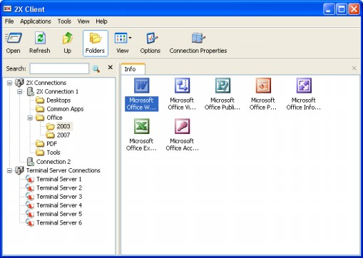

2X Client for PortableApps.com
PortableApps.com is a software solution allowing you to
take your favorite software with you. A fully open source and free platform, it
works on any portable storage device (USB flash drive, iPod, memory card,
portable hard drive, etc).

2X Client running from PortableApps.com
As you can see above, 2X Client
will run normally without being installed on your local machine, when running on
PortableApps.com. To add 2X Client to PortableApps.com simple download 2X Client
for PortableApps.com, open PortableApps.com, click on ‘Options’ and then choose
‘Install a New App’. PortableApps.com will ask you for the application you want
to install. Choose the 2X Client for PortableApps.com installation file and
follow the on screen instructions.
NOTE: You will have to download the
2XPortableClient.paf.exe packet; this will
be installed and launched through the PortableApps.com launch pad.
Using 2X Client for Windows
Introduction
After you have installed the 2X Client, you can now launch
the 2X Client to access your published applications.
To open the 2X Client:
- Start > [All] Programs > 2X > 2X Client > 2X Client
Configuring 2X Client for Windows
When launching the 2X Client you will be prompted to
configure a new 2X Connection. Please refer to the ‘2X Connection’ section below
for more information about how to setup a new 2X Connection
2X Client for Windows is able to connect with multiple
farms where farms is a common term used in remote session computing to refer to
a group of Terminal Servers. A 2X Farm consists of a 2X Publishing Agent joined
with one or more 2X Terminal Server Agents.
One or more 2X SecureClientGateway can be used to expose the 2X
Farm. To add a new farm in the 2X Client, one should use the hostname or IP
where the 2X SecureClientGateway Service is installed.
2X Connections
The first thing you must do is to add a new 2X Connection,
by clicking ‘File’ and select ‘Add New 2X Connection...’ or right click on ‘2X
Connections’ and click ‘Add New 2X Connection...’.
Connection Settings
In the Connection Settings area, enter the Primary Server
name or IP. This should be the name or IP where the 2X SecureClientGateway resides.
If your administrator enabled ‘Broadcast 2X SecureClientGateway
Address’ option on the server, you can click on the browse button ‘...’ and you
should see the available 2X Connection/s in your area. If you do not see any 2X
Connections, simply ask your administrator for the application server IP and
port and add this information manually. You can also add a Secondary Server, in
case a backup 2X SecureClientGateway is available.
The Client may choose the connection mode and has three
ways to connect.
In Regular Gateway
mode the Clients are connected with the 2X SecureClientGateway and another connection
is made between the 2X SecureClientGateway and the Terminal Servers.
In Direct mode
connection the Clients first ask the 2X LoadBalancer for the best available
Terminal Server and then connect directly with the Terminal Server.
In SSL mode, the
connection is done as in the regular gateway mode but the connection is
encrypted.
NOTE: In
order to connect through the 2X SecureClientGateway you just need to set the port
number that was configured on the SecureClientGateway Port in the Connection Settings
Page. (Default Gateway Port 80)
Logon
Enable ‘Auto Logon’ to enable the 2X Client connect
automatically instead of displaying the logon page every time you need to access
the 2X Connection.
Use System Credentials
(SSO) – To use the local current system credentials when connecting with
that particular 2X Connection enable ‘Use System Credentials (SSO). When you
enable this option, you’ll automatically log-in when connecting with the 2X
SecureClientGateway and the Terminal Servers. Please note that you need to choose to
install this module while installing the 2X Client to be able to use the
SSO.
On the ‘Logon’ section, enter your username, password and
domain to be used when retrieving your published applications. This information
is saved, encrypted, locally under the HKCU hive.
Local Resources
In case you want to configure how local resources are
handled by the terminal server, simply click on the ‘Local Resources’ tab and
select the options you want (these are the same options available with the
regular Microsoft RDP Client).
Experience
The experience tab allows you to tweak the connection speed
to optimize the performance of the connection with the remote host.
If you are using a connection to a remote computer in a
local network that runs at 100mbit or up, it is usually safe to have all of the
experience options turned on.
Network
In the Network Tab you may configure network settings to be
able to connect to 2X VirtualDesktopServer using a proxy.
To be able to connect to a Proxy Server, check the Use
Proxy Server checkbox. The following are different proxy connection types that
can be used:
SOCKS4 – Enable this
option to transparently use the service of a network firewall.
SOCKS4A – Enable
this option to allow a client that cannot connect to resolve the destination
host’s name to specify it.
SOCKS5 – Enable this
option to be able to connect using authentication.
HTTP 1.1 – Enable
this option to connect using standard HTTP 1.1 protocol connections.
After selecting a connection type, the Proxy Host (domain
name or IP Address) and port number have to be specified.
For SOCKS5 and HTTP 1.1 connections, authentication has to
be enabled, check the Proxy Requires Authentication checkbox, and type in user
credentials. Check ‘Use user logon credentials’ to use the user logon
credentials when authenticating with the proxy server.
Advanced Settings
Use Client System
Colors - Enable this option to use the client system Colors instead those
specified on the Terminal Server.
Use Client System
Settings – Enable this option to use the client system settings instead
those specified on the Terminal Server.
Create shortcuts configured
on server – For each published application, the administrator can
configure shortcuts on the clients desktop and start menu folder. With this
option one can choose to have or not to have these shortcuts.
Register file extensions
associated form the server – For each published application, the
administrator can associate certain file extensions. With this option the client
can choose to register or not these file extensions.
Redirect URLs to
client - Enable this option to use the local web browser when opening
‘http:’ links.
Redirect Mail to client
– Enable this option to use the local mail client when opening ‘mailto:’ links.
Use primary monitor only
for published applications – Enable this to start published applications
in your primary monitor only and not have it span through all the monitors
connected to your system.
Reconnect if connection is
dropped – Enable this option to automatically reconnect to the Terminal
Server if the connection is dropped.
Embed published desktop in
Launcher – Enable this option to access the published desktop inside the
2X Client
Span desktops on all
monitors – Enable this option to span the published desktops across all
connected monitors.
Enable desktop smart
sizing – Desktop smart sizing enables the Clients to scale the Client
window display of desktop when resizing.
Override computer name
will be the name that your computer will use during a Terminal Server
session. If set this will override the default computer name. Any filtering set
by the administrator with 2X VirtualDesktopServer will make use of the Override computer name.
2X Universal Printing
To use the 2X Universal Printing, the Clients will just
have to click ‘Print’ while using the published application on the Terminal
Server and select ‘2X Universal PDF Printer’.

In the 2X Universal Printing tab the Client can configure
to choose:
Print to default
printer – Use the default printer on the client side.
Select printer before
printing – Open the dialog to choose the printer before printing.
Use the following
printer – Click on ‘...’ to select
the printer and always use the selected printer when printing through the 2X
Universal PDF Printer.
View document to
print – Use this option to view the printed document using the default
PDF viewer instead of printing.
Options
In the Options Area one can select to choose the data
format output. The options are Portable Document Format (PDF), Enhanced Meta
File (EMF) and Bitmap (BMP).
- PDF - Use vector format and embedded fonts.
- EMF - Use vector format and does not embed fonts but use the system fonts found on the Client.
- BMP - Bitmap images.
The following features are only available when printing
using the EMF or BMP format:
Print on both sides
– Use both sides of the paper when printing.
Print in reverse order
– Print your documents starting from the last page.
Hardware
Margins:
- Fit to page - Fit the print job to the paper using the printer hardware margins.
- Preferred Dimensions - Fit the print job excluding hardware margins (ideal for print job which has margins set).
- Fit to dimension - This option should be used when printing on paper with preprinted forms.
Advanced Settings
In the Advanced Settings tab, you may configure the default
behavior of 2X Client.
Hide Launcher when
application is launched - If this option is enabled, the launcher will
get minimized in the system tray after an application is launched.
Always on Top - To
enable 'Always on Top' feature, highlight the 'Always on Top’ checkbox. With
this feature enabled other applications will no longer mask the launcher.
Do not warn if server
certificate is not verified – When connected over SSL, and the
certificate is not verified a warning message will be displayed. One can disable
this warning message by enabling this option.
Show folders page –
To show the folders page in the 2x Client enable this option. This will show the
available folders while showing the hierarchy of the application groups as
configured on the server.
Minimize to tray on close
or escape – Enable this feature to place the 2X Client to the System Tray
when click on the close button or hit escape.
Launch automatically at
Windows startup – This option will place a shortcut in the start menu
folder of the Client and the 2X Client will launch automatically with the
Windows startup.
Add 2X Connection
automatically when starting web or shortcuts items – This option will add the preferences of the 2X
Connection in the 2X Client when starting an item contained in a 2X Connection
that is not yet listed.
Don't show prompt message
for auto add 2X Connections –
Enable this option to disable prompt messages when adding auto 2X
Connections.
Auto Refresh 2X
Connections – Enable this option
to auto refresh each 2X Connection; hence check continuously that each 2X
Connection is still alive.
Clear session cookies on
exit – When a user logs on, a 2X VirtualDesktopServer logon cookie is
kept. This will allow the user to connect again with 2X VirtualDesktopServer
without re-authenticating. Check this option to delete any cookies when the user
closes the 2X Client.
Check for updates on
startup (Administrators only) – This option is available only with
administrative rights. On the startup of the 2X Client, it will check for any
available updates of the Client.
In the Advanced Settings tab click ‘Check for updates now ...’ to check if there
are any available updates for 2X Client. If there are updates available one can
click ‘Update’ which will download the
latest setup and install the Client or click ‘Download’ which will download the latest setup
to a specified location.
Listing of Published Applications
After configuring the 2X Client simply click ‘OK’. If you
entered a valid username and password and the server IP address and port are
correct, you should see the list of published applications available to your
username/computer/IP address on the main window.

If you want to create shortcuts for your published
applications on your local desktop computer, simply right click an application
and select ‘Create shortcut’. A shortcut for that application will be placed on
your desktop.
NOTE:
The 2X Client uses the Microsoft RDP protocol when connecting to your terminal
servers. This means it fully supports all the features supported by the RDP 5.2
specifications at the time of writing. In case some of these do not work as
expected, try launching the regular Microsoft RDP Client and connect to your
terminal servers to see if they work or not. If they work as expected but do not
work when using the 2X Client, please contact our technical support as explained
on the ‘Troubleshooting’ section of this manual.
Terminal Server Connection
2X Client is able to connect to multiple Terminal Server
Desktops using an RDP connection. To connect to a desktop click ‘File’ and
select ‘Add New Terminal Server Connection...’
Connection
Connection settings
In the Connection settings area, type the Primary
Connection name or IP. This should be the name or IP of the desktop you want to
connect to. The ‘Alias’ will give the connection a display name for better
readability.
NOTE: In
order to connect through the 2X SecureClientGateway you just need to set the Port
number that was configured on the SecureClientGateway Port in the Connection Settings
Page. (Default Gateway Port 80)
Logon
Enable ‘Auto Login’
to automatically log into the remote desktop when accessing it
Use System Credentials
(SSO) – To use the local current system credentials when connecting with
that particular 2X Connection enable ‘Use System Credentials (SSO). When you
enable this option, you’ll automatically automate the log-in process when
connecting with the 2X SecureClientGateway and the Terminal Servers. Please note that
you need to choose to install this module while installing the 2X Client to be
able to use the SSO.
On the ‘Logon’ section, enter your username, password and
domain to be used when retrieving your published applications. This information
is saved, encrypted, locally under the HKCU hive.
Display
Remote desktop size
Select your preferred resolution by selecting one of the
options from the drop down list. You can set the connection to use the available
area, a predefined resolution, full screen or a custom resolution. If you select
‘Custom’ you will have to enter the width and the height in the enabled text
boxes.
Local Resources
In case you want to configure how local resources are
handled by the terminal server, simply click on the ‘Local Resources’ tab and
select the options you want (these are the same options available with the
regular Microsoft RDP Client).
Programs
Start a program
Enable ‘Start the following program on connection’ to start
an application when a connection to the remote desktop is established.
Type the path and file name of the application that you
would like to launch in the ‘Program path and file name’ field (Example –
“c:\windows\notepad.exe”).
You can also set a start folder in the ‘Start in the
following folder’ field (Example – “c:\windows”).
Experience
The experience tab allows you to tweak the connection speed
to optimize the performance of the connection with the remote host.
If you are using a connection to a remote computer in a
local network that runs at 100mbit or up, it is usually safe to have all of the
experience options turned on.
Network
In the Network Tab you may configure network settings to be
able to connect to 2X VirtualDesktopServer using a proxy.
To be able to connect to a Proxy Server, check the Use
Proxy Server checkbox. The following are different proxy connection types that
can be used:
SOCKS4 – Enable this
option to transparently use the service of a network firewall.
SOCKS4A – Enable
this option to allow a client that cannot connect to resolve the destination
host’s name to specify it.
SOCKS5 – Enable this
option to be able to connect using authentication.
HTTP 1.1 – Enable
this option to connect using standard HTTP 1.1 protocol connections.
After selecting a connection type, the Proxy Host (domain
name or IP Address) and port number have to be specified.
For SOCKS5 and HTTP 1.1 connections, authentication has to
be enabled, check the Proxy Requires Authentication checkbox, and type in user
credentials. Check ‘Use user logon credentials’ to use the user logon
credentials when authenticating with the proxy server.
Advanced Settings
Connect to console –
Enable this option to connect to the console session (session 0) of the Terminal
Server
Display the connection bar
when in fullscreen mode – This will show the RDP connection bar at the
top of the page.
Reconnect if connection is
dropped – Enable this option to automatically reconnect to the Terminal
Server if the connection is dropped.
Embed published desktop in
Launcher – Enable this option to access the published desktop inside the
2X Client
Span desktops on all
monitors – Enable this option to span the published desktops across all
connected monitors.
Enable desktop smart
sizing – Desktop smart sizing enables the Clients to scale the Client
window display of desktop when resizing.
Using Terminal Server Connections
After adding a Terminal Server
connection, simply double click it or click ‘Open’ to start the connection. You
can start multiple connections at once. 2X Client will embed all the connections
inside the window and you can switch between one connection and another by
clicking on the corresponding tab.
Right click on the desktop tab to view the following
options:
- Send Ctrl+Alt+Del – Send the Ctrl+Alt+Del command to the published desktop which is used to open Windows Task Manager or Windows Security
- Smart-Sizing – If enabled, Smart Sizing will resize the published desktop so that the whole desktop can fit in the available are.
- Disembed from Launcher – This will launch the published desktop outside of the 2X Client.
- Close – Click to close the open connection.